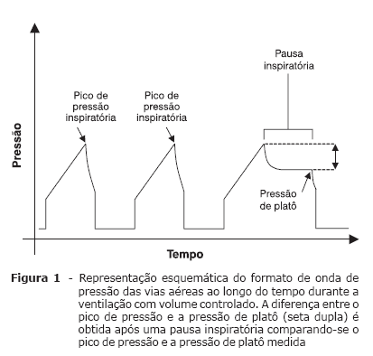
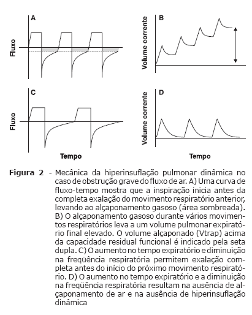
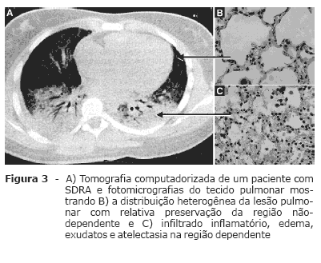
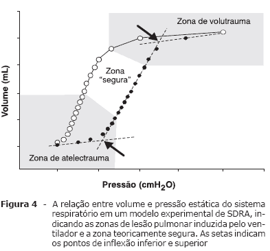

CONCEITOS BÁSICOS DE VENTILAÇÃO MECÂNICA EM PEDIATRIA
I.Introdução
A ventilação mecânica é utilizada em unidades de tratamento intensivo pediátrico no mundo todo, sendo responsável pela maioria das indicações de internação em UTI pediátrica. Sua prática é baseada em cuidados que profissionais adotaram na experiência em Ventilação mecânica com adultos principalmente e também com neonatais. Pulmões de bebês e crianças não são pulmões em miniatura de um adulto; numerosas mudanças e remodelações ocorrem desde o nascimento até a idade adulta, são características própias da faixa etária, como vias aéreas periféricas mais apertadas, o que acarreta em um importante fator de risco para doenças respiratórias na infância.
Dessa forma é necessário reconhecer e adotar estratégias de ventilação mecânica, que melhor darão suporte àquele paciente e também evitarão um dano maior causado pela ventilação mecânica. Sendo assim poder acelerar a recuperação e minimizar a morbidade pulmonar e sua concomitante mortalidade5.
II.Fisiologia Ventilatória em Pulmões Sadios
Os parâmetros ventilatórios variam segundo a idade, tamanho, e constituição física do paciente, no entanto um volume corrente efetivo de 6 a 8 mL/kg de peso corporal, podendo chegar até 10ml/kg é considerado adequado para a maioria dos pacientes.
Dessa forma, quando selecionamos no ventilador mecânico o modo controlado a pressão, por exemplo, o pico de pressão inspiratória deve ser estabelecido a fim de gerar volumes correntes dentro do mesmo intervalo (6 a 8 mL/kg), controlando a pressão de pico (PI) que oscila aproximadamente entre 15 e 20 cmH2O.
A pressão expiratória final positiva (PEEP) ou pressão nas vias aéreas no final da expiração deve ser usada para diminuir a probabilidade de atelectasia. Seu valor fisiológico gira em torno de 4 a 6 cmH²O, podendo variar muito de acordo com a patologia em questão. Em pacientes intubados incapazes respirar espontaneamente, deve-se muita atenção a essa pressão, sob o risco de trauma relacionado ao colabamento cíclico de seguimentos pulmonares.
Outra variável importante a se selecionada no ventilador mecânico é o tempo inspiratório (TI). São geralmente próximos àqueles da respiração espontânea apropriada para a faixa etária: 0,4 segundos para os recém-nascidos, 0,6 segundos para crianças pequenas, 0,8 segundos para crianças mais velhas e 1 segundo para adolescentes e jovens adultos.
A freqüência respiratória (FR) também é outro parâmetros, que relaciona-se à idade e ao tamanho do paciente, de forma invesa, quanto menor e mais novo: maior. Ela deve ser ajustada para que resulte em normocapnia, conforme medido através da gasometria arterial seriada, ou através da capnografia.
III.SITUAÇÕES CLÍNICAS DE INTERESSE:
III.I.Ventilação mecânica em doenças que levam à alteração da resistência das vias aéreas (ASMA e BRONQUIOLITE)
Doenças de resistência anormal, caracterizam-se pela dificuldade do fluxo aéreo, principalmente na fase expiratória do ciclo ciclo respiratório. Assim sendo, esses pacientes apresentam tempos expiratórios prolongados, sibilância expiratória e hiperinsuflação pulmonar dinâmica6. Pode ser decorrente de, edema da mucosa, acúmulo de muco, detritos intraluminais, compressão extrínseca, sendo mais frequente por broncoespasmo.
A asma é a doença que melhor representa essa condição clínica, sendo também observada em Bronquiolite Viral Aguda O objetivo da ventilação mecânica na asma aguda é reverter a hipoxemia (se presente), evitar a fadiga da musculatura respiratória e manter um nível de CO² dentro de um limite que gere pH aceitável, com menor dano ao pulmão. Dessa forma evitar trauma e hiperinsuflação iatrogênica. Um condição que poderia contribuir para o débito cardíaco de forma negativa9.
Uma mudança no manejo da ventilação de pacientes asmáticos ocorreu com a introdução da estratégia de hipoventilação controlada de Darioli & Perret1. Ela é conhecida atualmente com estratégia ventilatória na Asma e consiste em: volumes correntes entre 8 e 12 mL/kg, (supra fisiológicos) picos de pressão inspiratória de 40 a 45 cmH2O, frequência respiratória mais baixa 12 – 16 irpm e hipercapnia permissiva. Sabe-se que ela resultou em poucas complicações e nenhuma mortalidade ou morbidade a longo prazo em 19 crianças com asma quase-fatal submetidos a ventilação mecânica14.
Os modos ventilatórios para pacientes com asma aguda grave podem ser divididos em pressão controlada e volume controlado.
O modo de pressão controlada tem a vantagem de garantir que o limite de pressão inspiratória desejado seja respeitado. A principal desvantagem é a variação do volume corrente de acordo com mudanças na resistência das vias aéreas.
O modo de volume controlado oferece um volume corrente constante, porém gera diferenças nas pressões das vias aéreas de acordo com a alterações na resistência da mesma.

Deve-se dar atenção ao uso de PEEP em asmáticos entubados, para se evitar hiperinsuflação pulmonar, pressões das vias aéreas e intratorácica elevadas e comprometimento circulatório. Para essa determinação pode ser utilizada a medida de auto PEEP no ventilador que calcula a pressão intrínseca da via aérea, e não ofertarmos acima da mesma.

Uso da VNI nessa condição clínica: asma, bronquiolite mostrou o potencial desta modalidade em reduzir o trabalho respiratório, melhorar a ação dos broncodilatadores inalatórios e deixar muitas crianças subjetivamente mais confortáveis. Em muitos casos, a ventilação não-invasiva parece ter evitado a necessidade de entubação, todavia, ela deve ser usada somente em locais onde a entubação pode ser disponibilizada quando necessária.
III.II.Ventilação mecânica em doenças que levam à alteração da complacência pulmonar (SRDA, Pneumonia, grande queimado, politrauma)
A SDRA é a doença principal dessa condição. É caracterizada por uma resposta inflamatória grave a insultos locais (pulmonares) ou remotos (sistêmicos) que invariavelmente leva a anormalidades na troca gasosa e na mecânica pulmonar19. Define-se por hipoxemia grave (razão PaO2/FiO2 < 200) e infiltrados bilaterais na radiografia do tórax sem evidência de disfunção cardíaca

Na SDRA devemos adotar estratégias ventilatórias que evitem a lesão pulmonar induzida pela ventilação mecânica, LPIV.
Barotrauma versus volutrauma
O volume corrente excessivo que resulta em hiperinsuflação regional, e não a pressão das vias aéreas, é o fator responsável por esse tipo de lesão, agora chamado de volutrauma.
Na SDRA, há uma heterogeneidade do pulmão. Como resultado, até mesmo volumes correntes de 10 a 12 mL/kg podem levar a uma hiperisuflação importante e à lesão nas regiões pulmonares não-dependentes mais hígidas através da distribuição desproporcional do volume corrente a estas regiões com maior complacência.
Atelectrauma
Na SDRA, os alvéolos mais dependentes geralmente atingem um volume crítico de fechamento no final da expiração, resultando em colapso alveolar e fechamento das vias aéreas seguidos de reabertura dos alvéolos e das vias aéreas durante a inspiração seguinte. A repetição cíclica é um fenômeno chamado de atelectrauma28.
A utilização da PEEP adequada pode minimizar essa condição.
III.II.I.Estratégia protetora pulmonar
Utilização de medidas para que se tenha uma "zona segura" (Figura 4), com menor dano ao pulmão.

III.II.II.Hipercapnia permissiva
A hipercapnia permissiva pode ser definida como a presença de uma elevada PaCO2, sem que haja uma alteração muito significante do pH (7,2 – 7,3). A longo prazo a lesão e remodelação pulmonar será menor diante dessa dondição.
III.II.III.Tratamentos avançados
No estado clínico crítico, com desenvolvimento de pressões inspiratórias elevadas, acidose profunda e instabilidade hemodinâmica, existem alternativas menos convencionais tais como ventilação oscilatória de alta freqüência (VOAF), posição prona, óxido nítrico inalatório, surfactante exógeno ou ECMO, que podem ter um valor adicional. Contudo, uma discussão mais abrangente dessas modalidades de tratamento foge ao propósito dessa rotina.
IV.Conclusões
Atenção devemos dar ao paciente e ao reconhecimento da sua patologia. Com isso adotarmos as melhores estratégias, nos guiando por gráficos, números e gasometria. Assim diminuir hiperinsuflação, tolerar hipercapnia é a base principal do suporte mecânico de pacientes pediátricos com doenças de resistência anormal das vias aéreas, tais como asma quase-fatal6.
Já na doença que leva a alteração da complacência pulmonar, como SDRA, a aplicação de uma estratégia protetora pulmonar que incorpore volumes correntes reduzidos, recrutamento pulmonar eficaz, PEEP adequada minimizam a lesão pulmonar induzida pela ventilação.
Referências
1. Rotta AT, Kunrath CL, Wiryawan B. [Management of the acute respiratory distress syndrome]. J Pediatr (Rio J). 2003;79 Suppl 2:S149-60. [ Links ]
2. Dreyfuss D, Soler P, Basset G, Saumon G. High inflation pressure pulmonary edema. Respective effects of high airway pressure, high tidal volume, and positive end-expiratory pressure. Am Rev Respir Dis. 1988;137:1159-64. [ Links ]
3. Rotta AT. Asthma. In: Fuhrman BP, Zimmerman J, editors. Pediatric critical care. Philadelphia: Mosby; 2006. p. 588-607. [ Links ]
4. Bohn D, Kissoon N. Acute asthma. Pediatr Crit Care Med. 2001;2:151-63. [ Links ]
5. Darioli R, Perret C. Mechanical controlled hypoventilation in status asthmaticus. Am Rev Respir Dis. 1984;129:385-7. [ Links ]
RESPONSÁVEL PELA ELABORAÇÃO: RAFAEL BELOTTI FIALHO